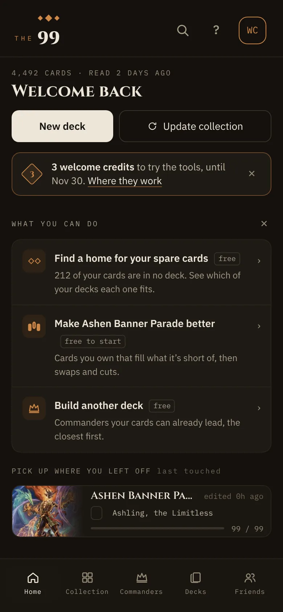
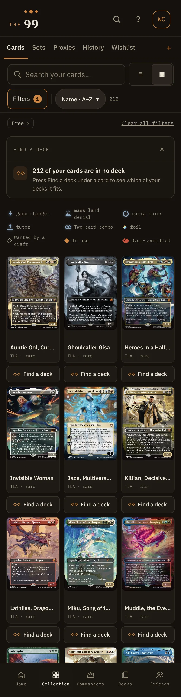

One complaint: "I have a bunch of cards I want to add to my other decks, but I don't know where to go." R2 keeps R1's Tuning tab and welcome sheet as drawn, redoes Find a deck on Collection around the shipped Free filter, and adds a Home section that says what a player can do, for the player who never reads the welcome strip. Rendered from main 7563036 with shipped components. Figures and art are illustrative.
Since R1
Find a deck: the All / In no deck switch is gone (the shipped Availability: Free filter does the job); the glyph press that cut names short becomes a labelled button under each tile.
R1's Q3 (rename Free) is withdrawn with the switch: the shipped word stays.
New: call 4, What you can do on Home (board Home).
Tuning and Welcome as R1, approved: Tuning always lands on its tiles, and the free block stays in Where credits work (R1 Q1 and Q2, A).
1 · Find a deck, R2: the shipped Free filter is the one control
No switch. Availability's Free option and chip are the filter, as shipped; R1's All / In no deck switch is gone.
On All, the call-out is the door to it: eyebrow Find a deck, 212 of your cards are in no deck / See which of your decks each one could go in., and Show them, which applies Availability: Free. A bare ✕ closes it for good.
On Free alone, the same call-out without the button: Press Find a deck under a card to see which of your decks it fits.
Each tile gets a labelled button under it, the tile's full width: the door's two diamonds and Find a deck (36px on a phone, 34px from md). The name keeps its whole line, and a reader who has never seen the glyph reads what it does. It opens the card window straight on Find a deck, as R1.
Drawn only while the list is narrowed to Free alone: on All most cards are in decks, and a button under every tile would be noise.
4 · Home says what you can do, in your words
A section on Home under the welcome strip, above Pick up where you left off: What you can do. Goals, not tool names, each with the player's own numbers, each one press from the tool that answers it.
Find a home for your spare cardsfree: 212 of your cards are in no deck. See which of your decks each one fits. → /collection?avail=free, the call-out above.
Make Ashen Banner Parade betterfree to start: Cards you own that fill what it’s short of, then swaps and cuts. → the deck's Tuning tab (the most recently touched deck).
Build another deckfree: Commanders your cards can already lead, the closest first. → /commanders.
Why it reaches the player who skipped the strip: it is page content, not a promo line, it uses their cards and their deck by name, and it does not mention credits at all. The strip keeps the credits story.
A row leaves once its tool has been opened from anywhere (the moments' spent store); the section leaves with its last row. A bare ✕ beside the heading closes it for good. Rows only draw when they have something to say: no spares row at 0 cards in no deck, no tune row with no deck. At zero decks Home already draws its ways in, so the section waits for the first deck.
Phone: one column of rows. From 1180: three across, one row.
2, 3 · As R1
Tuning gets its own tab after Analysis; Consider leaves the tab row and becomes Tuning's first tile. Analysis keeps the reading.
Where credits work: every row lands, the Tuning rows name the tab, and a free block names Consider and Find a deck.

Home, What you can do
Under the strip, above the decks.

Collection, Free
The call-out; a button under each tile.
Q4 · In the Free view, a labelled button under each tile, or no button at all?
Option A: the Find a deck button under every tile (drawn). Option B: no button; in the Free view a tile's own press opens the card window straight on Find a deck, and the call-out says so. B adds nothing to the tile, but it changes what a tile does in one view only, and nothing on the tile says it.
Recommended: A. A new player can see the tool and its name on every card, and a tile always does the same thing.
Q5 · Should What you can do retire row by row, or only when hidden?
Option A: a row leaves once its tool has been opened, and the section leaves with its last row (drawn). Option B: the rows stay until the ✕, as a standing shortcut list.
Recommended: A. Home is for what is new to the player; once they have found a tool it lives in its own place.
Not changed
The card window's Find a deck door and its moment (M8).
The Availability filter, its options and its chip.